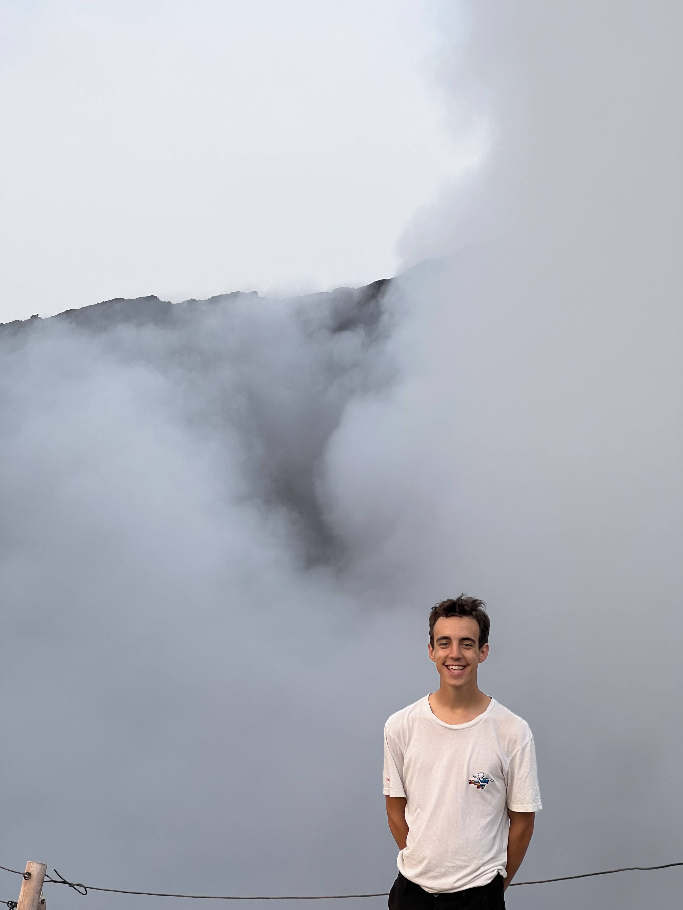
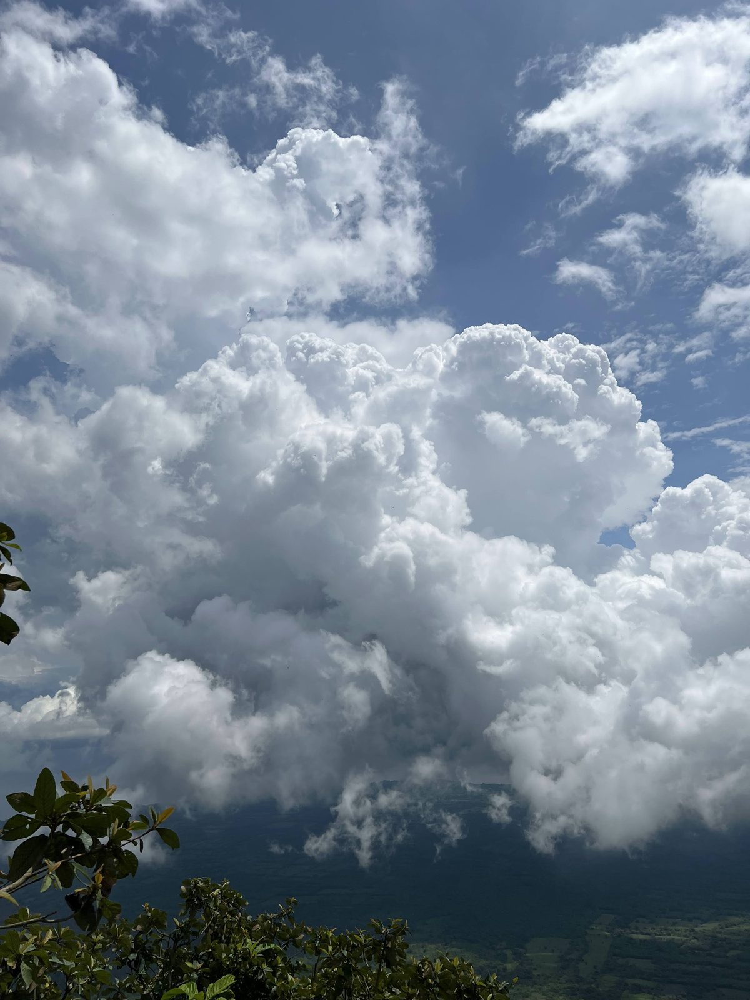

Santiaguito - Guatemala
Impressionant, indescriptible, éprouvant... Un des volcans les plus actifs d'Amérique Centralel

Je suis Arno Rabault, ingénieur aérospatial de formation, passionné d'un nombre incalculable de sujets souvent liés aux sciences, amateurs de sport, d'aventure et d'insolite. Amoureux de la nature surtout quand elle n'est pas plate, je cours avec mes jambes depuis toujours pour aller plus vite, pour voir plus de paysage, pour perdre moins de temps, et je cours avec ma tête pour en savoir toujours d'avantage, découvrir, comprendre. J'aime être dans l'action, et dans l'observation. Volcarno devrait me permettre de faire un résumé de tout ce que je cours, de canaliser ma curiosité, de rassembler mes souvenirs, de structurer mes pensées, de partager mes aventures, et d'échanger avec les autres curieux qui passeraient par là.
Chaque mois je suis animé d'un sujet différents. Chaque mois je découvre un sujet qui recouvre le précédent, mais mon manque d'organisation peut m'amener a découvrir un sujet déjà recouvert… Mes premiers entretiens professionnel m'ont mis face à une question à laquelle je ne m'étais jamais confronté : pourquoi toutes ces passions ? Ont elles un lien ? Arno, tes connaissances n'ont ni queue ni tête ! Me dis-je.
! MOMENT BIZARRE !
He bien si. Après mûre réflexion, ce qui m'anime c'est ce qui ne se saisit pas, ce qui est plus grand que nous, ce qu'on s'obstine à essayer de comprendre mais que le simple fait d'essayer montre notre ego, lui aussi surdimensionné. Ca a commencé par l'espace, les étoiles, l'astronomie et le vide spatial, guide de ma formation, puis les nuages, et leur immense masse en suspension au dessus de nos têtes, sans qu'on s'en aperçoive. La montagne, au volume de cailloux difficile à s'imaginer, les volcans et leurs mouvement, presque vivant mais totalement minéral, la neurologie et particulièrement la mémoire, et la quantité de souvenir et d'images stocker dans une matière organique incomprise. J'aime tenté de visualiser les volumes, masses, informations, mouvement, surfaces au travers d'unités standards, que l'on peut toucher, que l'on peut voir, ou créer. Combien faudrait il de voiture pour avoir un volume équivalent au Kilimandjaro ? A combien de piscine olympiques correspond l'eau de ce nuage au dessus de ma tête ? Là est le lien : la limite de l'imagination.


Parmi toutes ces passions, il en est une qui ressort et vous l'aurez compris : les volcans. En fil conducteur des mes récits et de mes aventures, il occupent une place centrale. Ils étaient comme les autres sujets précédemment, mais j'ai eu l'occasion de voyager en Amérique Centrale et de les côtoyer, et tout à changer. J'ai pu saisir l'insaisissable, j'ai pu voir l'immensité, j'ai pu sentir leur odeurs, j'ai pu toucher leur création. Et ça, ça marque. Ca donne envie d'en voir d'autre. Ca donne envie de comprendre. Ca donne envie de s'aventurer à nouveau sur des terrains similaires, et recevoir le panel de sensations qu'ils ont a donner. Certains m'ont donner l'impression d'être sur une autre planètes, d'autres m'ont fait me protéger d'une pluie de cendres, quand tous m'ont donné des souvenirs inoubliables. Alors voilà, je partage mes passions et aventures, mais aussi tout ce à quoi je consacre du temps et tout ce qui mérite d'être mis en avant, car l'insaisissable et la démesure n'est pas toujours admirable.
"Si y a sentier, y a rando." Moi
Impressionant, indescriptible, éprouvant... Un des volcans les plus actifs d'Amérique Centralel

Un des volcans les plus connus au monde, en éruption continue, à la forme parfaite.

Un cratère digne d'une autre planète, un lac acide aux couleurs époustouflantes.

Un volcan qui se mérite, en pleine jungle, aux émissions de vapeurs souffrées gigantesques.

Un cratère aux dimensions exceptionnelles, insaisissables, au fond rougeoyant.

Un des plus jeunes volcans d'Amérique, tout en contraste avec la jungle environnantes.

Assez proche de la capitale pour y aller en transport public, un géant du Costa Rica.

Un volcan mythique, à l'ascension technique et au sommet très très chaud.